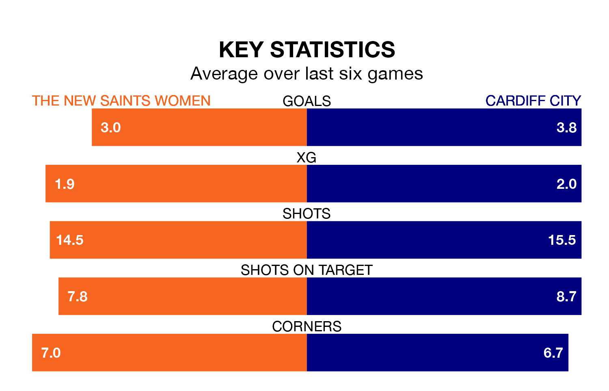

Two of Welsh Premier Womens League's top sides face each other in Sunday's early kick-off, when fourth-placed The New Saints Women host table-topping Cardiff City.
The New Saints have picked up five wins and one draw from nine games so far this season, and sit nine points below the visitors going into the 2pm match.
Cardiff, meanwhile, have won eight and drawn one, picking up 25 points.
With 29 goals in nine games so far this season, Cardiff are the league's highest scorers with 3.2 goals per game. And they are conceding fewer than average, letting in four goals at a rate of 0.4 per game.
The New Saints are also above average scorers, with 2.9 goals per game, compared to a league average of 1.9. They have conceded 2.0 goals per game.
The New Saints are in reasonable form in Welsh Premier Womens League, with four wins and two losses from their last six games.
With six wins and no losses over that period, City's form is much better – they have taken 18 points from 18, compared to the hosts' 12.
Over the last two years, The New Saints and Cardiff have played each other on five occasions. Cardiff won all of them.
On average, the New Saints scored 1.2 goals and Cardiff 3.8 in those matches.
Their last meeting was on October 1, when Cardiff won 3-1 at home.
The New Saints' last match was on December 17, a 4-1 win against Cardiff Metropolitan, with getting the goals for the New Saints.
Cardiff beat Aberystwyth Town 5-0 last time out, also on December 17, with on the scoresheet.
Updated: 15:34, 08/01/24